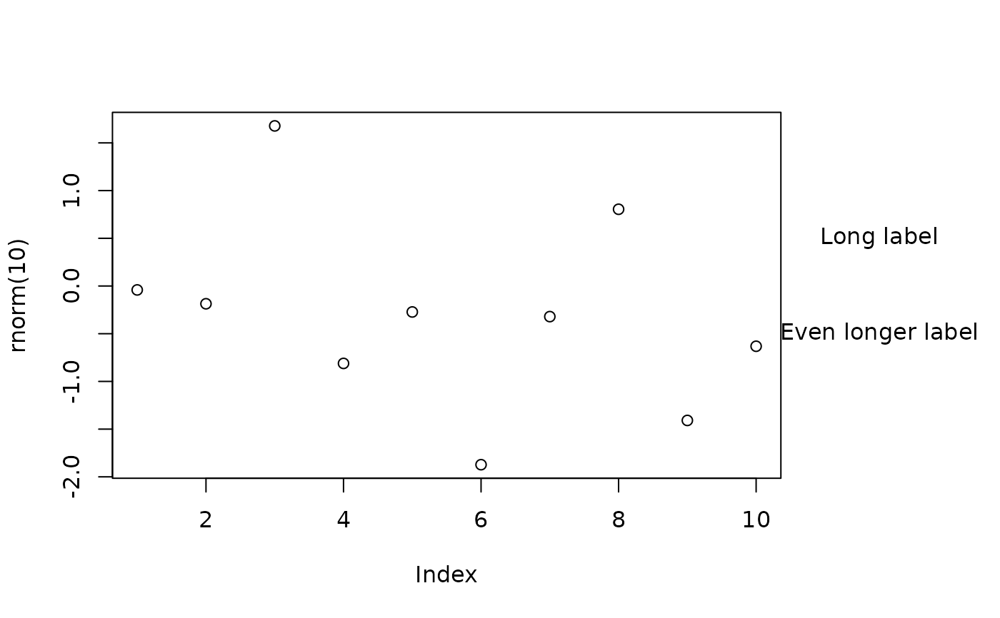

Find the margin width necessary to fit text or a legend next to a plot
getMarginWidth.RdCalculates the margin width necessary to fit text or a legend next to a plot.
Details
getMarginWidth reads parameters about the current plot and calculates the left or right (default) margin necessary to fit the strings passed as labels or a legend containing those strings.
Value
A two element list containing the number of margin lines necessary to fit the text or legend and the horizontal center of the margin in user units.
Examples
plot(rnorm(10))
newmarinfo<-getMarginWidth(labels=c("Long label","Even longer label"))
#> plotprop 0.814 marprop 0.063 plotwidth 9.72 marwidth 2.861766
oldmar<-par("mar")
par(mar=c(oldmar[1:3],newmarinfo$newmar))
plot(rnorm(10))
par(xpd=TRUE)
text(rep(newmarinfo$marcenter,2),c(0.5,-0.5),
c("Long label","Even longer label"))

par(mar=oldmar,xpd=FALSE)